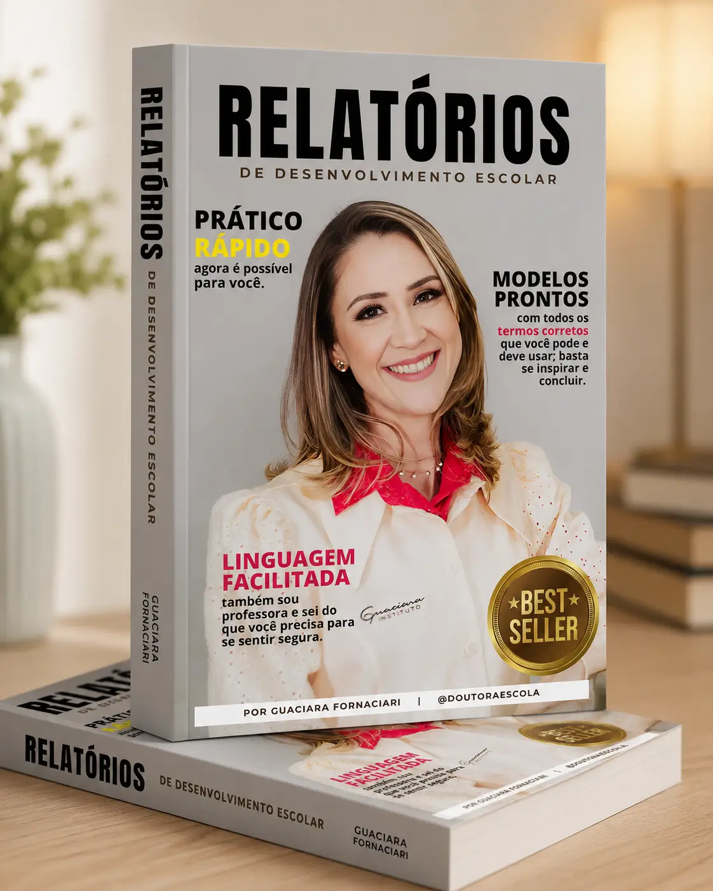
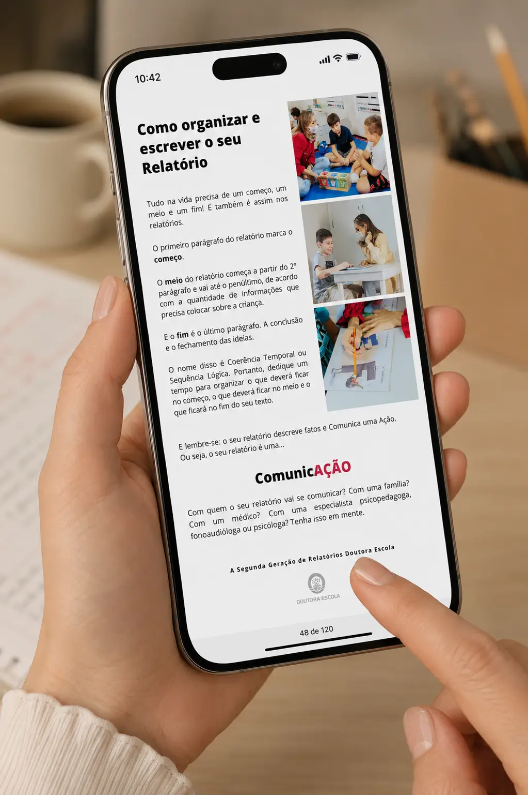
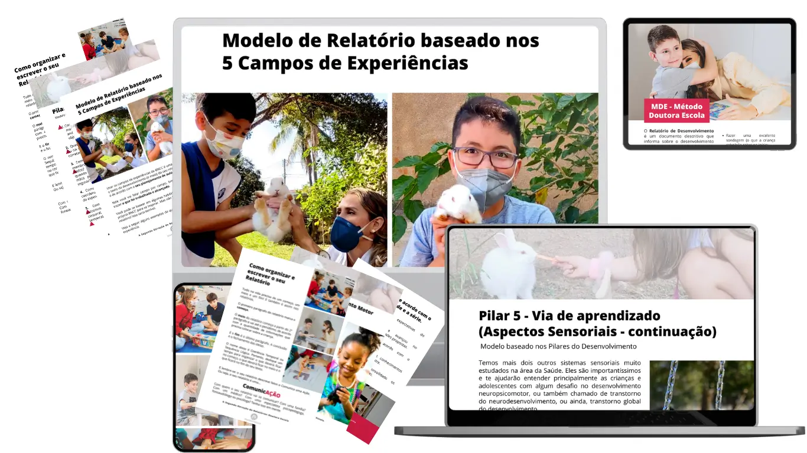
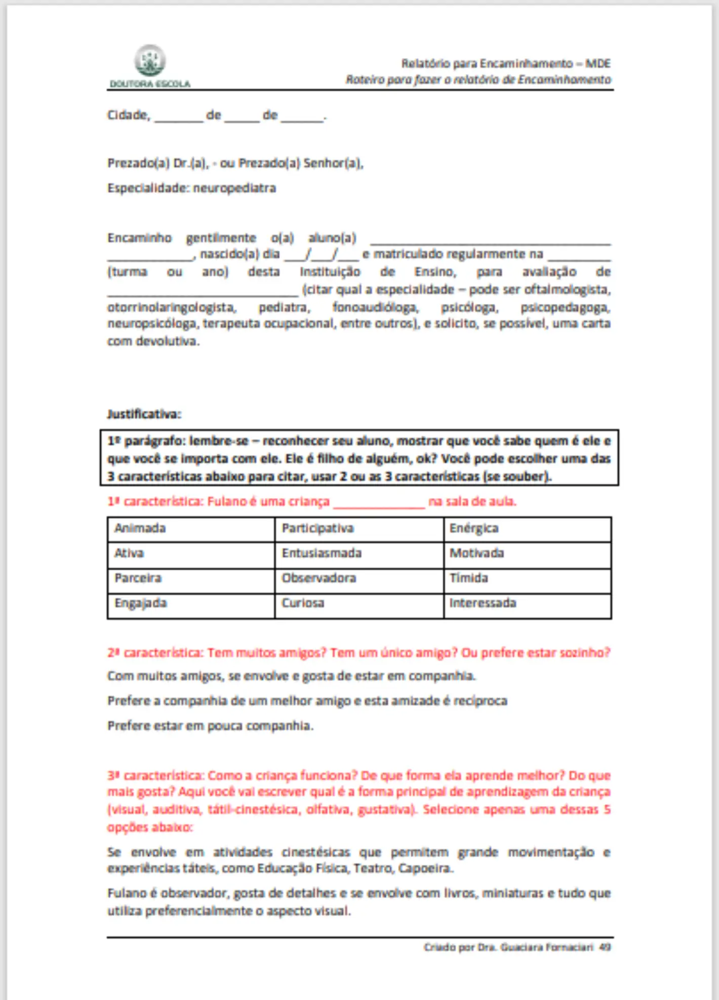
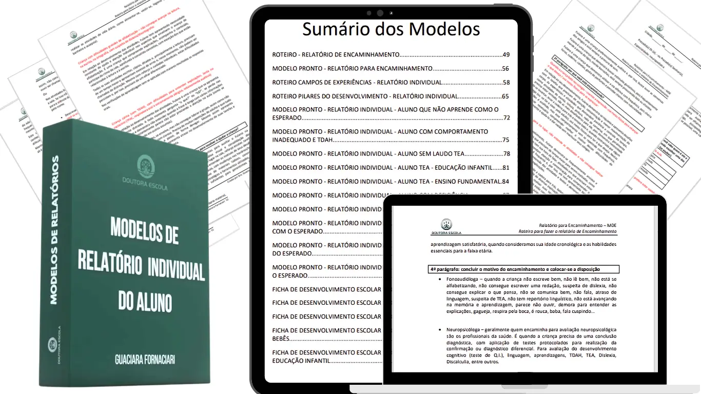
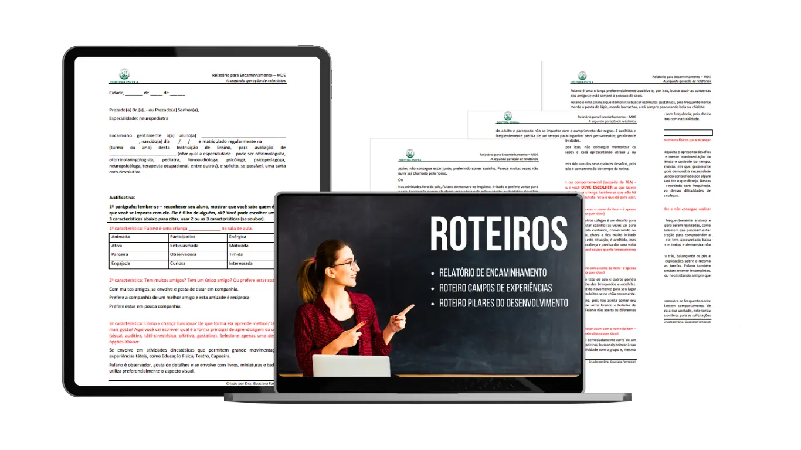
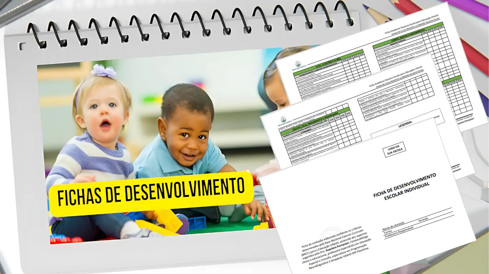
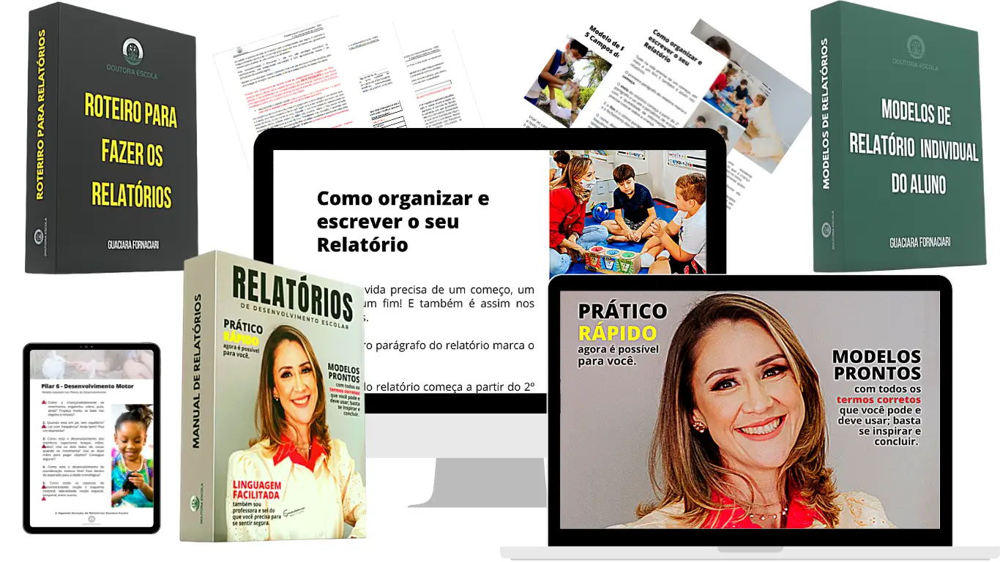

Método completo, 40+ modelos prontos, termos da BNCC e linguagem facilitada — tudo em um único livro, escrito por quem vive a realidade da sala de aula há 20 anos.
✨ Para professoras e especialistas que sabem avaliar seus alunos, mas travam na hora de colocar no papel.

Conhece o aluno, sabe tudo sobre ele, mas na hora de escrever, as palavras somem. O cursor pisca. E você fica ali, sem saber por onde começar.
Termina o relatório, lê 3 vezes, muda uma palavra — e ainda entrega com frio na barriga: "Será que a coordenadora vai pedir para refazer?"
Depois de anos de profissão, ainda sentir insegurança. Não é falta de competência. Na faculdade ninguém ensina. Na coordenação ninguém explica.
Sexta à noite e os relatórios ainda estão na bolsa. Sábado e domingo viram dias de trabalho. Sua família espera. Você também.
O problema não é você. Ninguém te ensinou a fazer esses documentos. Na faculdade não ensinam. Nos cursos não explicam. E você ficou sozinha — gastando horas que poderiam ser com sua família.
Não é um PDF genérico da internet. É um livro completo, com método, modelos prontos e linguagem facilitada.

📱 Acesse no celular, tablet ou computador — a qualquer momento

Modelos organizados por tipo de aluno, com termos prontos para usar.

Estrutura completa com introdução, desenvolvimento e conclusão. Basta trocar o nome do aluno.
Tudo o que você vai ter acesso imediato.

Método + Modelos + Termos + Fichas — o kit completo para seus relatórios.
A sequência correta: começo, meio e fim. Sem mais tela em branco.
Introduções do 1º ao 4º bimestre, com 4 perfis: aluno padrão, dificuldade, agitação motora, desafios severos.
Relatório organizado pela BNCC com perguntas-guia para cada campo.
Socioemocional, comportamental, cognitivo, comunicação, sensorial e motor — com exemplos.
Modelos para fechar: rendimento adequado, abaixo do esperado, encaminhamento para especialista.
Vocabulário técnico organizado. Nunca mais fique sem saber que palavra usar.
Cada modelo foi escrito por uma especialista com 20 anos de experiência.
Oi, sou a Guaciara Fornaciari.
Eu fui uma menina muito tímida. Tive depressão infantil. Meu apelido era "Mantegão". Quando me tornei professora, numa reunião de pais, uma mãe advogada chegou para falar comigo. E eu travei. As palavras fugiram.
Naquele dia aprendi: ou eu agia, ou ficava para trás.
Passei 9 anos me transformando. Me formei em Fonoaudiologia, fiz pós em Inclusão, certificação internacional em Autismo. Fui professora, coordenadora, diretora. Abri uma escola do zero.
Nessa caminhada, vi de perto: professoras brilhantes que travam na hora de escrever relatórios. Vi professoras chorando no banheiro. Vi relatórios voltando rasurados. Vi fins de semana inteiros perdidos.
E decidi resolver. Coloquei 20 anos de experiência em 40+ modelos prontos para que você nunca mais sinta aquele frio na barriga ao entregar um relatório.
Assista aos depoimentos reais de quem já usa o material.
Imagine abrir o computador para escrever o relatório e, em vez da tela em branco, ter na sua frente um modelo pronto — com a estrutura correta, os termos certos e a BNCC aplicada.
Imagine entregar com a segurança de que está profissional. Sem medo. Sem dúvida.
Imagine ter o seu fim de semana de volta.
Isso é o que este livro entrega.
Para complementar os seus relatórios e te ajudar na prática diária.

O passo a passo prático para você aplicar na sua escola.

Fichas prontas e adequadas para a educação infantil.
Se você pagasse alguém para fazer 1 relatório, custaria no mínimo R$50.
Com 30 alunos: R$1.500 por bimestre. R$6.000 por ano.
Este livro tem 40+ modelos prontos que você usa em todos os bimestres, todos os anos.

Teste com tranquilidade. Se por qualquer motivo você não ficar satisfeita nos primeiros 7 dias, devolvemos 100% do seu dinheiro. Sem perguntas. Sem burocracia.
"Eu quero que TODAS as professoras tenham acesso. Porque eu sei o que é estar do outro lado. Todo o risco é meu."
— Guaciara Fornaciari
Digital (PDF). Acesso imediato após a compra. Leia no celular, tablet ou computador. Imprima se preferir.
Sim. Todos escritos com base nos Campos de Experiências e diretrizes da BNCC por uma especialista com 20+ anos.
Sim! Tem modelos e roteiros específicos para especialistas, com linguagem técnica apropriada.
Sim. Modelos prontos para TEA (com e sem laudo), TDAH, deficiência e encaminhamento.
Os modelos são referência profissional. Você se inspira, adapta ao seu aluno e assina com orgulho. É um guia que te ensina a escrever com método.
7 dias para avaliar. Se não ficar satisfeita, devolvemos 100%. Sem perguntas.
Se pagasse R$50 por relatório terceirizado, com 2 alunos já "pagou" o livro. E usa em TODOS os bimestres, TODOS os anos.
Professora, eu sei como essa rotina pesa. Eu sei o que é olhar para a tela sem saber por onde começar.
Criei este livro porque acredito que nenhuma professora deveria passar por isso sozinha. Coloquei 20 anos de experiência em 40+ modelos prontos para que você tenha na mão tudo que precisa.
Um abraço caloroso,
Guaciara Fornaciari — Doutora Escola ✓